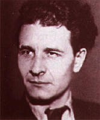
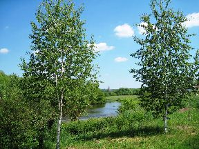
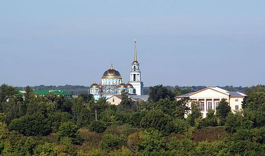
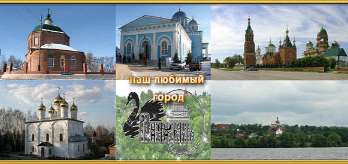
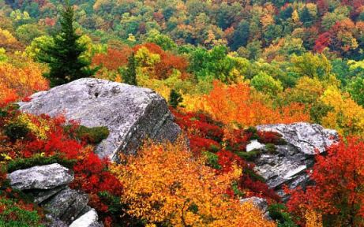
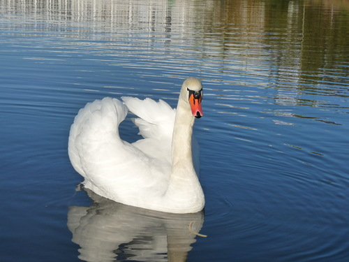
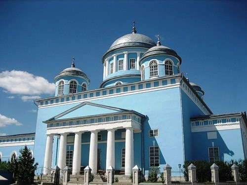
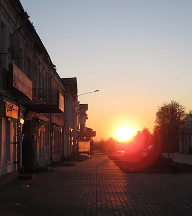

Смоляков
Алексей Алексеевич
Ну, здравствуй, Замятин Евгений
ЗАМЯТИН, ЕВГЕНИЙ ИВАНОВИЧ (1884–1937), русский писатель. Родился
20 января (1 февраля) 1884 в г.Лебедянь Тамбовской губ. (ныне
Липецкая обл.) в семье небогатого дворянина. Кроме впечатлений
от природы тех мест, с которыми так или иначе были связаны
многие русские писатели — Толстой, Тургенев, Бунин, Лесков,
Сергеев-Ценский, — большое влияние оказало на Замятина домашнее
воспитание. «Рос под роялем: мать — хорошая музыкантша, — писал
он в Автобиографии. — Гоголя в четыре — уже читал. Детство —
почти без товарищей: товарищи — книги». Впечатления лебедянской
жизни воплотились впоследствии в повестях Уездное (1912) и
Алатырь (1914).

Ну, здравствуй, Замятин Евгений
У дома стою твоего.
Закончился дождик осенний
И первый снежок намело.
Заснежило что-то мне душу,
Предательски в горле першит.
Пришёл я тебя послушать,
Прости за нежданный визит.
Не надо каких-то мне таин,
Мне надо с тобой посидеть.
Мне просто немного оттаять,
Немного душой посветлеть.
Но, что-то никто и не встретил,
И видно никто не простит.
А только холодный ветер
Калиткою громко стучит.
Давно родной дом ты покинул,
Но ты же со мной, ты же есть.
И гроздья замёрзшей рябины
Тихонько мне шепчут: - Он здесь-
Неспешно пройду я по дому,
За круглым столом посижу.
Зашёл к земляку я родному,
На фото его погляжу.
Не надо каких-то мне таин,
Я здесь погрущу о былом.
Встречай же- радушный хозяин.
Я просто пришёл к тебе в дом.
12.12.2012г
Заночую на Дону
Заночую
на Дону, разведу костёр,
Для меня уже расстелен луговой ковёр.
Распластаюсь на ковре из зелёной ткани,
Грудью полною вдохну воздух Лебедяни.
Поброжу среди берёзок я ногами босыми,
Обниму их стройный стан с девичьими косами.
Из хрустальных родников зачерпну водицы,
Лебедянскою водой досыта напиться.
Отогретый под лучами солнечного света,
Буду слушать соловья накануне лета.
На рассвете, у реки, в утреннем тумане
Встречу новую зарю милой Лебедяни.
25.02.2012г
Лебедянь- спасибо, что ты есть
Много городов у нас красивых,
Их названий и не перечесть.
Только всех милее мне в России
Лебедянь- спасибо, что ты есть.
Словно лебедь ты раскинул крылья
На донских обоих берегах.
Русичей, спасая от насилья,
На дозоре отстоял в веках.
Купола соборов величавых
Держат здесь святые небеса.
От больших побед до самых малых
Расцвела твоя чудесная краса.
Твоих стен старинных благоцветье
На груди высоких берегов,
В бой щитом вставало в лихолетье
Сберегая землю от врагов.
На пути вставал ты вражьей силе
Защитил достоинство и честь.
На просторах нынешней России,
Лебедянь – спасибо, что ты есть.
07.10.2012г
Наш город
На зелёном взгорье Дона церкви высоки.
Здесь стоит старинный город у святой реки.
Золотыми куполами в небо устремлён.
Разнаряжен в ожерелье тополиных крон.
Убелённый сединою пережитых лет
Не забудет город этот торжество побед.
Здесь сражались наши предки за святую Русь.
Я ему за те победы низко поклонюсь.
А сегодня в небе чистом лебеди летят.
Ароматами дурманит яблоневый сад.
Перекрестье тихих улиц, через Дон мосты.
Упоение неброской русской красоты.
Перелески и овраги, всем знакомый склон.
Каждый житель в этот город навсегда влюблён.
В колыбели черноземья церкви высоки.
Здесь раскинул крылья город у святой реки.
И пускай проходят годы, но наверняка
Будет город наш любимый жить во все века.
20.12.21011г.
Город-труженик и город-праздник
Много городов у нас красивых
Их названий и не перечесть
Только всех милее мне в России
Лебедянь-спасибо что ты есть.
Словно лебедь ты раскинул крылья
На донских обоих берегах
Город-труженик и город-праздник
Сохранивший молодость в веках.
Купола на церквах величавых
Будто подпирают небеса
Город-труженик и город-праздник
Как мила твоя спокойная краса.
И домов старинных благолепье
Навевает мысли о былом.
Сколько перенёс ты в лихолетье
Сберегая землю от врагов.
На пути вставал ты вражьей силе
Защитил достоинство и честь
Город-труженик и город-праздник,
Лебедянь- спасибо что ты есть.
16.03.2010г
На краю Галактики
На краю спиральной Галактики
Далеко от Млечного пути
У звезды по имени Солнце
Есть планета под номером три.
Ту планету Землёй мы назвали
И она наш общий дом.
На Земле есть страна Россия
Мы в стране той давно живём.
А теперь возьми просто карту
На Россию внимательно глянь.
На её бескрайних просторах
Ты легко найдёшь Лебедянь.
И сегодня праздник в России
И сегодня праздник у нас.
Лебедянь вокруг Солнца с Землёю
Обернулась 400 раз.
18.03.2010г.
Стих для внучки Ангелины
Мне уже одиннадцать лет, у деда я спроси:
-Расскажи мне милый дед, Лебедянь красива?
-Вот смотри, моя родная, у реки на взгорке
Прилёг лебедь отдохнуть, и встречает зорьки.
Крыло левое его, через реку - в поле,
Здесь красивыми домами лежит на просторе.
Крылом правым расцвели сады Агронома
Как услышишь запах яблок, знай, ты снова дома.
Хвостик - Монастырский лес, полон сказок и чудес.
Клювик Тяпкиной горы тянется к водице,
Словно лебедь наш решил из реки напиться
Знаю, скажут знатоки: - Это небылица-
Но, поверьте, у реки, Лебедянь- как птица.
Вдруг сейчас взмахнёт крылом над родным простором,
Пусть тогда кто назовёт деда фантазёром.
Я смеюсь и говорю ,это всё, загадочно
И улыбку всем дарю, ну, а деду радостно.
23.12.2010г.
Камень
Старинный русский город Лебедянь относится к тем степным оплотам
Русского государства, которые находились среди великих полей
черноземья на той роковой черте, за которой некогда простирались
земли дикие, незнаемые и первые вдыхали бурю, пыль и хлад из-под
грозных азиатских туч, то и дело заходивших над нею, первые
видели зарева страшных ночных пожаров ими заполяемых, первыми
давали знать Москве о грядущей беде и первыми ложились за неё
костьми..
И.А. Бунин
Камень

(сказание в стихах)
На подъезде к Лебедяни,в чистом поле, у реки
Распустились незабудки и синеют васильки.
Здесь старинный. ветхий камень,к дубу прислонясь, лежит.
Он веками хранит тайны и задумавшись молчит.
Мхом поросший, древний камень,
Что же скрыла твоя память?
*****
Вдоль великих полей черноземья
За незримой чертой роковой
Азиатов поганое племя
Сотворяет кровавый разбой.
Здесь зарницы большого пожара
Полыхают в ночи без конца
И налёты злодея-татара
От Ефремова и до Ельца.
Здесь уложен огромный камень.
Дуб листвою над ним шелестит,
А у дуба палач-басурманин
Гнутой саблей на солнце блестит.
Этот камень- смертельная плаха
И подхвачена ветром молва
После каждого саблею взмаха
Отлетает ещё голова.
По-над Доном разносятся стоны,
Беззащитны родные края.
От ордынцев здесь нет обороны
Опалённая плачет земля...
*****
Наши предки здесь крепость отстроят,
Свой защитный редут возведут.
Рубежи от набегов прикроют,
Лебедянью тот град назовут.
И отхлынет поганая сила,
И отступит татарская рать.
И земля от пожарищ остыла,
Только камень остался лежать...
На подъезде к родной Лебедяни,
В чистом поле,у быстрой реки
Где рыбачат сейчас россияне,
И синеют в полях васильки.
17.10.2011г.
Лебединый край
(сказание в стихах)
Созревают тёмны тучи,
Наливаются водой.
Тяжелы они, могучи,
На земь линули стеной.
И ручьями разбежались
Пробивая себе путь,
Да в низине задержались,
Успокоясь, отдохнуть.
Набралась огромна чаша
И не видно края в ней,
А вода всё прибывала
Из пробившихся ключей.
И волною побежала,
Разнося повсюду весть,
На краю земель российских
Озеро велико есть.
Берега его бескрайни
Расшумелись камышом.
Солнца лучик самый ранний
Красит воды серебром.
Рыба плещется играя
Хвостом лупит толстый сом.
И для птиц нет лучше рая
Веселиться, плавать в нём.
Как хрустальна здесь водица
Как приятно здесь кормица.
Всё что хочешь выбирай
Это точно птичий рай.
И хрустальной той водицы,
Чтоб напиться и омыться,
Села стая лебедей
Нету в мире лучше птицы
И прекрасней и нежней.
Да напившись той водицы
Впредь решили здесь гнездиться,
В сердце родины своей.
Один день в Лебедяни XIX века
В Лебедяни мы живём,
Это город редкий.
Как же жили здесь в веках
Наши с вами предки?
Знаю точно,земляки,
Это мне известно.
Заглянуть в века былые
Очень всем полезно.
*****
Вот Стрельцы готовят ружья,
Чистят пушки Пушкари.
Труд их тяжек,труд их долог,
От зари и до зари.
**
Кузнецы куют подковы,
Надо к вечеру успеть.
Казаки приедут скоро
На коней чтоб их одеть.
**
Пекарь разжигает печь
Калачей успеть испечь.
С пылу,с жару,из печи
Чтобы были калачи.
Подходи чесной народ,
Разевай пошире рот.
**
На изгибе,у Клинка,
Рыбаков артели
Ловят в невод судака
Чтобы все поели.
**
Недалёко детвора
В речке плещется с утра.
То купанье,то игра,
Веселится детвора.
**
Бабы сушат вдоль реки
Тканные полотна
Шить рубахи мужикам
Промысел доходный.
**
Из Задонки,у реки
Раздаются матюки
Там сошлись соседи
В «дружеской» беседе.
**
Под горой,у родника,
Подрались два мужика.
Не сумели поделить
Чью козу сюда водить.
Дюже возле родника
Травка сочна и мягка.
**
Подправляют,чинят мост
Красят ярко.
По мосту пойдут обозы,
Скоро ярмарка.
Понагонят лошадей,
Цирк приедет для затей.
Будет жарко.
**
А на Тяпкиной горе
Мужики потеют.
Всё толкают в гору воз.
К полудню успеют.
На возу издалека
Прибыл дёготь и пенька.
**
На Соборной площади
Собралася очередь.
Продаёт купец свой мёд,
И недорого берёт.
**
А по площади народ
Тут и там снуёт,снуёт.
**
Возле храма,у ворот,
Девки водят хоровод.
Собрался и тут народ.
Кто глазеет,кто поёт.
**
В магазине «Щука»
Рыбу продают.
И один служилый
Берёт сразу пуд.
**
По торговым по рядам
Важно ходит шик-мадам.
Подбирает дочкам
С кружевом платочки.
**
По Христорождественской
Идёт народ торжественно.
Впереди дьячок с кадилом.
Дождя просят нивам.
**
Вот жандарм старается,
Низко прогибается.
Это по Дворянской
На своей коляске
Едет генерал.
В здании управы
Думу он собрал.
И сейчас решат они
Про земельные паи.
Дать ли простолюду
Или так побудут.
**
Звонари на колокольне
Начинают перезвон.
И притихли все мгновенно..
Молятся смиренно.
Не помогут тут чины.
Перед Богом все равны.
**
Солнце клонится к закату.
Простолюд бредёт по хатам.
По домам идут купцы.
День трудились.
Молодцы.
**
Завтра снова много дел
Чтобы город молодел.
Заслужить чтобы делами
От потомков Лебедяни,
Поклон низкий,до земли.
И Господь Вас всех храни.
20.03.2010г.
Лебедянские рассветы
Необьятна страна Россия
Но у каждого есть уголок
Где и девушки как-то красивей
И душистей в полях цветок.
Где берёзки всегда стройнее
А на травах светлее роса
Да и солнышко греет сильнее
И заливестей птиц голоса.
Это родиной малой зовётся,
Кто и как по стране накружил
В Лебедянь непременно вернётся
Где в объятиях матери был.
Полюбил где рассветы у Дона
Научился ценить красоту
И лепнину старинного дома
И цветение яблонь в саду.
Он в далёкое детство вернётся
Посветлеть и оттаять душой
И опять на рассвете проснётся
Очарован его красотой....
10.04.2011г